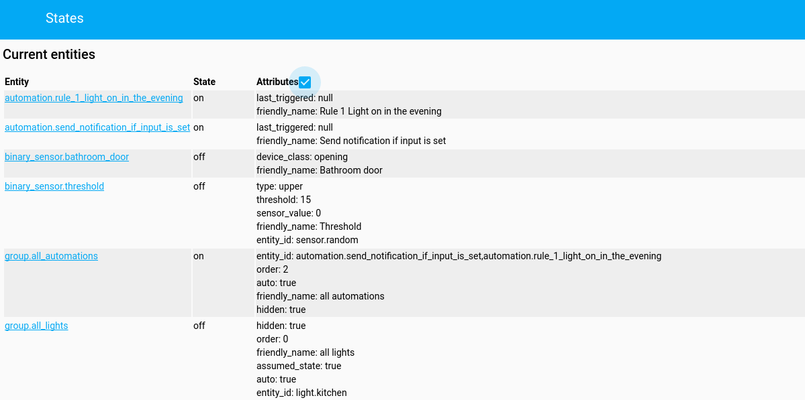
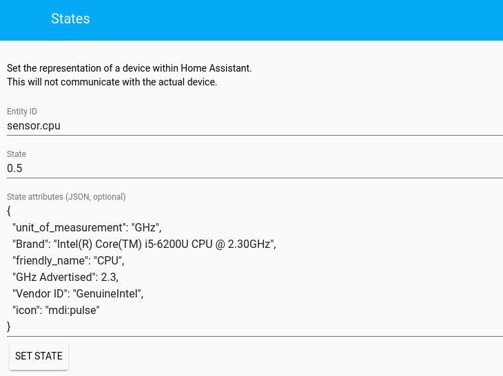

class: center, middle  # Home Assistant - Automatisation --- .header[] # Grundlagen ```text Wenn ich nach Hause kommen - Auslöser (trigger) und es nach Sonnenuntergang ist - Bedingung (condition) schalte das Licht im Wohnzimmer an - Aktion (action) ``` --- .header[] # Beispiel ```yaml automation: - alias: Check if value is greater than 4 and show notification trigger: platform: numeric_state entity_id: sensor.random above: 4 action: service: persistent_notification.create data: message: "Sensor value greater than 10" ``` --- .header[] # Trigger - Event, welches die Regel ausführt - Status-Änderungen (z. B. `not_home` zu `home`) --- .header[] # Auslöser (event) - Auslösung bei Verarbeitung eines Events - Nur Event-Name oder Daten des Events ```yaml automation: trigger: platform: event event_type: MY_CUSTOM_EVENT # optional event_data: name: workshop ``` --- .header[] # Verfügbare Events - `homeassistant_start`, `homeassistant_stop` - `state_changed` - `time_changed` - `service_registered`, `service_executed`, `call_service` - `platform_discovered` - `component_loaded` --- .header[] # Auslöser (MQTT) - MQTT-Mitteilung für gegebenem Topic - Payload ```yaml automation: trigger: platform: mqtt topic: living_room/switch/ac # Optional payload: 'on' ``` --- .header[] # Auslöser (numeric state) - bei Änderungen des Zustands - inklusive `above` und/oder `below` eines Schwellenwertes ```yaml automation: trigger: platform: numeric_state entity_id: sensor.temperature # Optional value_template: '{{ state.attributes.battery }}' # At least one of the following required above: 17 below: 25 ``` --- .header[] # Auslöser (state) - Zustandsänderung - Wenn nur `entity_id` benutzt wird, dann für alle Änderungen ```yaml automation: trigger: platform: state entity_id: device_tracker.paulus, device_tracker.anne_therese # Optional from: 'not_home' to: 'home' ``` - Zeitliche Abhängigkeit ```yaml for: hours: 1 minutes: 10 seconds: 5 ``` --- .header[] # Auslöser (sun) - Sonnen-Aufgang und Untergang - Offset für spezielle Fälle ```yaml automation: trigger: platform: sun # Possible values: sunset, sunrise event: sunset # Optional time offset. This example is 45 minutes. offset: '-00:45:00' ``` --- .header[] # Auslöser (time) - Zeitliche Auslösung ```yaml automation: trigger: platform: time # Matches every hour at 5 minutes past whole minutes: 5 seconds: 00 automation 2: trigger: platform: time # When 'after' is used, you cannot also match on hour, minute, seconds. # Military time format. after: '15:32:00' automation 3: trigger: platform: time # You can also match on interval. This will match every 5 minutes minutes: '/5' seconds: 00 ``` --- .header[] # Auslöser (template) - Nutzung eines Templates - Evaluation des Zustandes (`true` und `false`) ```yaml automation: trigger: platform: template value_template: "{% if is_state('device_tracker.paulus', 'home') %}true{% endif %}" ``` --- .header[] # Bedingungen - optionaler Test - Limitierung der Ausführung - wird gegen den aktuellen Zustand getestest .footnote[Conditions: https://home-assistant.io/docs/scripts/conditions/] --- .header[] # Boolsche Bedingungen - `and`, `or` und Kombinationen .left-column[ ```yaml condition: condition: and conditions: - condition: state entity_id: 'device_tracker.paulus' state: 'home' - condition: numeric_state entity_id: 'sensor.temperature' below: '20' ``` ] .right-column[ ```yaml condition: condition: or conditions: - condition: state entity_id: 'device_tracker.paulus' state: 'home' - condition: numeric_state entity_id: 'sensor.temperature' below: '20' ``` ] --- .header[] # Bedingung (numeric state) - Evaluation eines numerischen Wertes - Für über: `value >= above`. Für unter: `value <= below` - `value_template` verfügbar ```yaml condition: condition: numeric_state entity_id: sensor.random above: 10 below: 20 value_template: {{ float(state.state) + 2 }} ``` --- .header[] # Bedingung (state) - Prüft auf Status ```yaml condition: condition: state entity_id: device_tracker.paulus state: not_home ``` - Nur wenn Status für bestimmte Zeit bestanden hat ```yaml for: hours: 1 minutes: 10 seconds: 5 ``` --- .header[] # Bedingung (sun) - Sonne aufgegangen oder untergegangen - Optionaler Offset (`before_offset` oder `after_offset`) ```yaml condition: condition: sun after: sunset after_offset: "-1:00:00" ``` --- .header[] # Bedingung (Time) - Zeitliche Beschränkungen - `before` und `after` - Wochentag ```yaml condition: condition: time after: '15:00:00' before: '02:00:00' weekday: - mon - wed - fri ``` --- .header[] # Bedingung (Template) - Prüft, ob Template-Wert `true` ist - Entweder Boolscher Ausdruck oder Template gibt `true` zurück ```yaml condition: condition: template value_template: '{{ states.device_tracker.iphone.attributes.battery > 50 }}' ``` --- .header[] # Aktion - Ausführung, wenn Regel is getriggert und Conditionen erfüllt - Service --- .header[] # Persistent notification ```yaml action: service: persistent_notification.create data: message: "Automation ausgeführt" title: "Workshop" ``` --- .header[] # Notification ```yaml action: service: notify.notify data: message: "Automation ausgeführt" title: "Workshop" ``` --- .header[] # Schalter ```yaml action: service: light.turn_on entity_id: group.living_room ``` ```yaml action: service: climate.set_away_mode data: entity_id: climate.kitchen away_mode: 'on' ``` --- .header[] # Erster Schritt - Bestimmen des Elements --  dann  .footnote[Developer Tools: https://home-assistant.io/docs/tools/dev-tools/] --- .header[] # States  --- .header[] # RESTful API ```bash $ curl -X GET \ -H "x-ha-access: YOUR_PASSWORD" \ -H "Content-Type: application/json" \ http://localhost:8123/api/states ``` ```python from requests import get url = 'http://localhost:8123/api/states' headers = {'x-ha-access': 'YOUR_PASSWORD', 'content-type': 'application/json'} response = get(url, headers=headers) for entity in response.json(): print(entity['entity_id']) ``` .footnote[RESTful API: https://home-assistant.io/docs/tools/dev-tools/] --- .header[] # Details einer Entität  --- .header[] # Zugriff - Status (`state`) ```text *.state ``` - Attribute (`attributes`) ```text {{ states.binary_sensor.iss.attributes.lat }} ``` --- class: middle .header[] - **Dokumentation**: <br/> [https://home-assistant.io/](https://home-assistant.io/) - **Community**: <br/> [https://community.home-assistant.io/](https://community.home-assistant.io/) - **Chat**: <br/> [https://gitter.im/home-assistant/home-assistant](https://gitter.im/home-assistant/home-assistant) --- class: center, middle <img src="images/ha-logo.png" alt="Home Assistant Logo" style="width:400px;"> # [https://home-assistant.io](https://home-assistant.io.org)